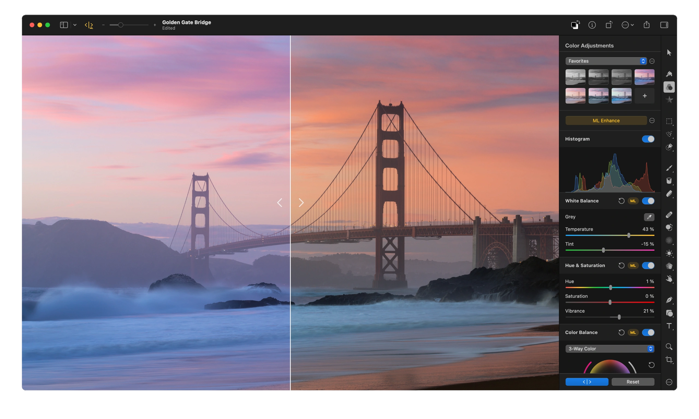

Pixelmator Pro is an image editor designed to make the most powerful professional image editing tools accessible to everyone. And with an extensive collection of tools for editing and retouching photos, creating graphic designs, painting, drawing vector graphics, and adding stunning effects, it’s the only image editor you’ll need.
Buy nowPixelmator Pro comes with a full set of vector tools for creating resolution-independent designs. It includes easily-customizable smart shapes, a large collection of pre-designed shapes, and support for vector file formats including PSD, SVG, PDF, Adobe Illustrator, and Illustrator EPS.

Vector shapes are resolution-independent, so curves always look smooth and edges always stay sharp, no matter how much you resize each shape or even entire vector designs.

Pixelmator Pro supports vector file formats, including PSD, SVG, PDF, Adobe Illustrator, and Illustrator EPS, so you can effortlessly edit shapes and paths in these files, and export them while keeping all their vector data.

With a collection of pre-made Smart Shapes, you can quickly add star and various polygon shapes, arrows, speech bubbles, and other shapes to your compositions, then customize them in any way you want.
The collection of powerful, nondestructive color adjustments in Pixelmator Pro lets you edit the colors in your photos, or even videos, in any way you want. And with full support for RAW photos, a collection of stunning adjustment presets, and incredible retouching tools, it couldn’t be easier to turn good-looking photos spectacular.

In Pixelmator Pro, you’ll find everything from essential color adjustments like brightness, contrast, and exposure to advanced tools like multi-channel curves and wheel-based color balance.

Many of the most important adjustments can be applied automatically, using a machine learning algorithm trained on 20 million photos.

Magically remove unwanted objects, clone parts of your photos, lighten or darken precise areas, and do much more. All by using simple brushstrokes to retouch just the areas you want. So all your shots look picture-perfect.
Pixelmator Pro supports RAW photos from over 750 of the most popular digital cameras. What’s more, you can add RAW photos as RAW layers and edit directly without having to convert or preprocess them.
View supported RAW formats (Falta el ico)Make small imperfections or even entire objects disappear from your images by painting over them with the Repair Tool. No matter how complex the background, the Repair Tool can make almost any object vanish without a trace.